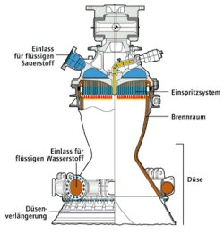

|
 |
 |
|
|
am Dienstag, den 4.1.2000
|
 |
 |
 |
 |
 |
 |
|
Außerdem stieg in Werner sich immer mehr eine selbstbewußte Genugtuung darüber auf, Geld gespart zu haben. In gewisser Weise handelte er sehr verantwortungsvoll, er
**war zum erstmals in seinem Leben sparsam.

Einen Briefkasten in der Innenstadt hielt Werner für am besten geeignet. Vielleicht würde er schon am nächsten Tag Post erhalten.
Werner
**war rundum glücklich, als er jetzt seinen Weg zu Studentenwohnheim antrat. Er mußte sich unbedingt ein
**wenig um sein Zimmer kümmern. Die Lebensmittel im kleinen
Kühlschrank
**waren bestimmt schon teilweise in Verwesung übergegangen. Werner hatte die schlechte Angewohnheit, Nahrungsmittel quasi nur zwangsweise zu verbrauchen, nämlich dann,
**wenn das Verfallsdatum kurz bevorstand. Auf diese Weise lagerte zum einen immer ein breites Nahrungsangebot im
Kühlschrank,
das jedem Besucher imponierte und zum anderen
**wurde Werner dabei die schwere Entscheidung abgenommen,
**was er nun tatsächlich essen sollte.